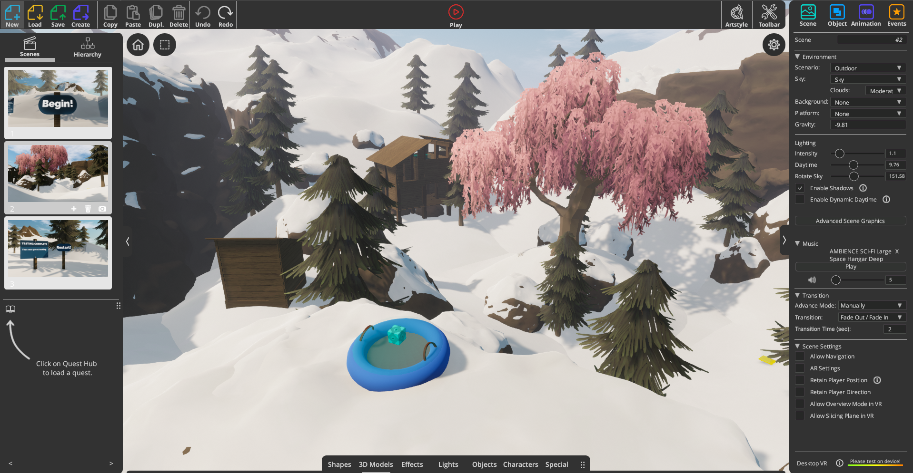

Snowball Industries is a multiplayer shooter game that I made to engage visitors to the Blocksmith website. Blocksmith is a 3D game making tool that anyone can use to make and share games/experiences. While the tool can be used comfortably by beginner coders, it also allows for a great deal of complexity. I regularly use Javascript in my Blocksmith games and some techniques similar to that of Unity, Unreal Engine or other more advanced game makers.
Below are two photos. I took one a ski trip and the other in my childhood backyard. They describe the asthetic that I went for with this game, snowed over, run down, and in the mountains.